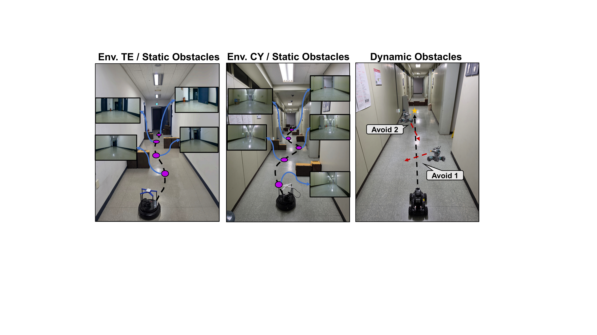
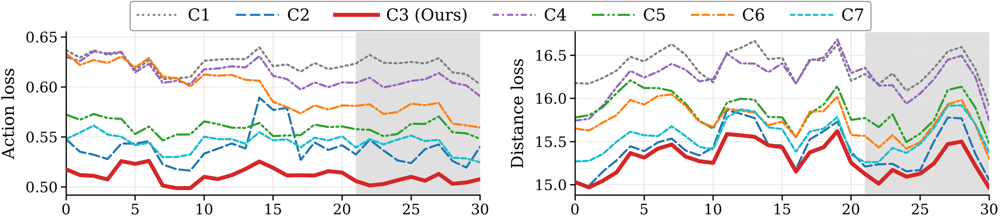
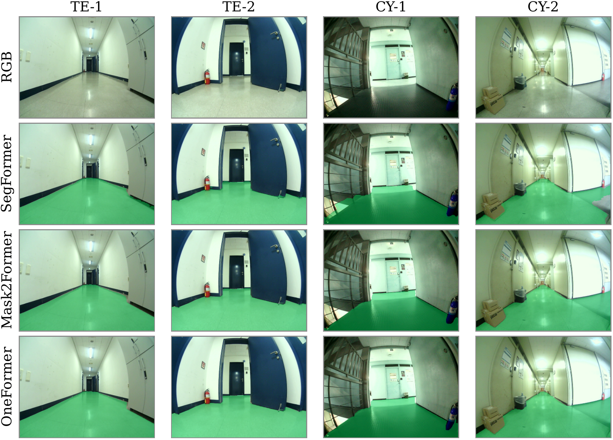

Vision-based navigation models, particularly foundation models, generate viable trajectories from RGB observations alone. However, even state-of-the-art transformer- and diffusion-based policies struggle to generalize in unfamiliar deployment environments containing unseen obstacles or shifted conditions. The resulting trajectories often remain goal-directed but unsafe. Existing efforts improve safety through external trajectory correction or internal geometric priors, yet the resulting policies are not trained to explicitly represent obstacle boundaries or traversable free-space structure. To address this, we propose a navigation model that incorporates these structures directly into the policy via fine-tuning and is designed for transformer-based RGB navigation policies. Across three robot platforms, two indoor environments, and static and dynamic obstacle scenarios, our method reduces collisions per run from 1.76 to 0.20 and raises the goal arrival rate from 42% to 93% relative to ViNT, with consistent gains over NoMaD and their CARE-augmented variants.
Method Overview
SAFER-Nav incorporates segmentation-aware safety information into a pretrained RGB-based navigation policy. It comprises an RGB-goal encoder, a segmentation encoder, a representation-level fusion module, and dual action prediction pathways. The RGB-goal branch follows a pretrained navigation backbone, while a trainable segmentation branch converts aligned binary traversability masks into spatiotemporal tokens and injects them into the latent representation through attention-based fusion.
Figure 1. Overview of SAFER-Nav. A trainable segmentation branch augments a pretrained RGB-goal backbone to refine the latent representation and support safety-aware waypoint prediction. The snowflake icon indicates parameters that remain frozen during fine-tuning.
Seg-guided Fusion & Dynamic Blending
Segmentation features refine the RGB latent representation through cross-attention and support an auxiliary segmentation-only action branch. At inference, the main and auxiliary predictions are dynamically blended based on the current obstacle layout, enabling the policy to produce collision-aware actions when obstacles are present while preserving efficient goal-directed behavior in clear space.
Figure 2. Seg-guided fusion detail. Segmentation features refine the RGB latent representation and support an auxiliary segmentation-only action branch for safety-aware waypoint prediction.
Experimental Setup
We deploy SAFER-Nav on three mobile robot configurations with different visual characteristics: a DJI RoboMaster S1 (120° FOV), a TurtleBot4 with Intel RealSense D435 (69.4° FOV), and a LoCoBot with a 170° fisheye camera. We evaluate in two unseen indoor environments (TE and CY) with static obstacles and a dynamic obstacle scenario where a teleoperated robot crosses the path.

Figure 3. Overview of environments. Left and middle: static-obstacle setups in TE and CY, with maps and representative visual observations. Right: dynamic-obstacle setting, where the robot must continuously avoid the moving robot.
Video Comparisons
Static Obstacle Environment — LoCoBot
Static Obstacle Environment
Static obstacles evaluated on the LoCoBot platform.
SAFER-Nav (Ours)
ViNT
NoMaD
ViNT + CARE
NoMaD + CARE
Static Obstacle Environment — RoboMaster
Static Obstacle Environment
Static obstacles evaluated on the RoboMaster platform.
SAFER-Nav (Ours)
ViNT
NoMaD
ViNT + CARE
NoMaD + CARE
Static Obstacle Environment — TurtleBot4
Static Obstacle Environment
Static obstacles evaluated on the TurtleBot4 platform.
SAFER-Nav (Ours)
ViNT
NoMaD
ViNT + CARE
NoMaD + CARE
Dynamic Obstacle Environment — Corner-Appear
Dynamic Obstacle Environment
A dynamic obstacle appears from a corner along the robot's planned path.
SAFER-Nav (Ours)
ViNT
NoMaD
ViNT + CARE
NoMaD + CARE
Dynamic Obstacle Environment — Front-Approach
Dynamic Obstacle Environment
A dynamic obstacle approaches head-on toward the robot.
SAFER-Nav (Ours)
ViNT
NoMaD
ViNT + CARE
NoMaD + CARE
Quantitative Results
Navigation with Static Obstacles
Comparison of navigation performance across three robot platforms and two indoor environments (10 trials each). Metrics: goal arrival rate (%), collisions per run, distance (m), and time (s).
Robot & Model
Environment TE
Environment CY
Goal% ↑
#Coll. ↓
Dist. (m)
Time (s)
Goal% ↑
#Coll. ↓
Dist. (m)
Time (s)
RoboMaster
SAFER-Nav (Ours)
0.9
0
14.87 ± 0.49
77.91 ± 7.26
0.9
0.22
24.98 ± 0.44
130.84 ± 5.67
ViNT
0.6
3.17
14.59 ± 0.67
79.99 ± 6.95
0.4
0.75
26.20 ± 0.65
128.63 ± 3.12
NoMaD
0.3
3.67
16.38 ± 0.20
87.50 ± 5.72
0.5
3.4
25.48 ± 0.78
122.27 ± 3.70
ViNT + CARE
0.5
1.4
15.17 ± 0.62
82.98 ± 4.22
0.1
1
26.35
138.25
NoMaD + CARE
0.2
4
17.07 ± 1.09
91.75 ± 3.18
0.1
2
25.97
131.19
TurtleBot4
SAFER-Nav (Ours)
0.9
0.24
14.41 ± 1.09
87.65 ± 7.74
0.9
0.22
25.26 ± 0.74
137.51 ± 3.09
ViNT
0.3
3
15.21 ± 0.52
84.03 ± 2.28
0.4
1
26.12 ± 0.73
141.89 ± 6.90
NoMaD
0.1
7
23.42
120.50
0.2
4.5
26.33 ± 0.15
125.73 ± 5.49
ViNT + CARE
0.4
3.25
14.35 ± 0.28
85.75 ± 4.60
0.3
3.33
26.84 ± 0.28
134.37 ± 3.16
NoMaD + CARE
0.2
4.5
17.28 ± 2.31
107.75 ± 7.07
0.2
1.5
26.08 ± 0.17
147.95 ± 6.16
LoCoBot
SAFER-Nav (Ours)
1.0
0.4
14.97 ± 0.34
85.13 ± 4.33
1.0
0.1
25.75 ± 0.91
134.63 ± 2.42
ViNT
0.2
2.5
17.18 ± 0.21
82.19 ± 2.74
0.6
0.17
25.88 ± 0.82
126.31 ± 6.09
NoMaD
0.2
2.5
18.78 ± 0.22
102.34 ± 1.23
0.4
4.75
26.14 ± 0.27
129.94 ± 5.83
ViNT + CARE
0
N/A
N/A
N/A
0.4
1.25
25.29 ± 0.14
142.72 ± 4.70
NoMaD + CARE
0
N/A
N/A
N/A
0.3
3
25.92 ± 0.49
152.59 ± 2.18
Goal Arrival vs. Collision Count
Methods closer to the top-left corner indicate better overall performance (high goal arrival, low collisions).
Navigation with Dynamic Obstacles
Number of trials with collisions (out of 10) per dynamic obstacle scenario. The dynamic obstacle is a teleoperated TurtleBot4.
Model
(i) Corner-Appear
(ii) Front-Approach
SAFER-Nav (Ours)
0/10
0/10
ViNT
5/10
9/10
NoMaD
6/10
8/10
ViNT + CARE
3/10
2/10
NoMaD + CARE
2/10
2/10
Ablation & Analysis
Training Curves
Learning curves for seven segmentation-to-action configurations. C3 (post-transformer bridge + auxiliary branch) achieves the lowest action and distance losses.

Figure 5. Learning curves over 30 training epochs for configurations C1–C7. The shaded region marks epochs 21–30 used for summary statistics. Lower is better for both losses.
Robustness to Segmentation Backbone
SAFER-Nav accommodates different segmentation backbones (OneFormer, SegFormer, Mask2Former) without retraining, achieving similar goal-reaching performance across all three.

Figure 6. Online traversability predictions from three segmentation backbones on identical frames from TE and CY, showing differences at object boundaries and around floor reflections.
BibTeX
@article{anonymous2027safernav,
title = {SAFER-Nav: Enhancing Safety for Visual Robot Navigation via Segmentation-Aware Fine-Tuning},
author = {Anonymous},
journal = {Under review at ICRA 2027},
year = {2027}
}